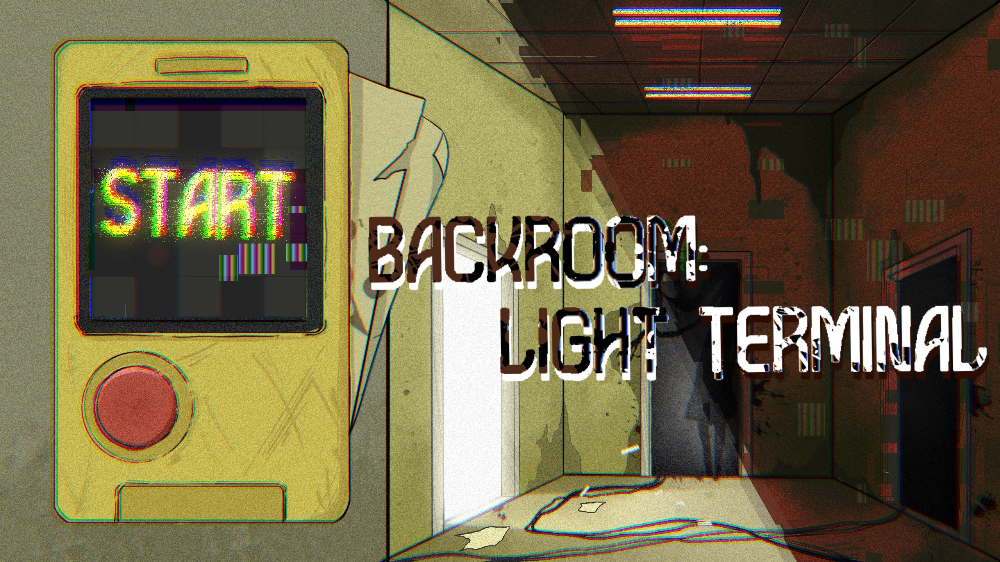
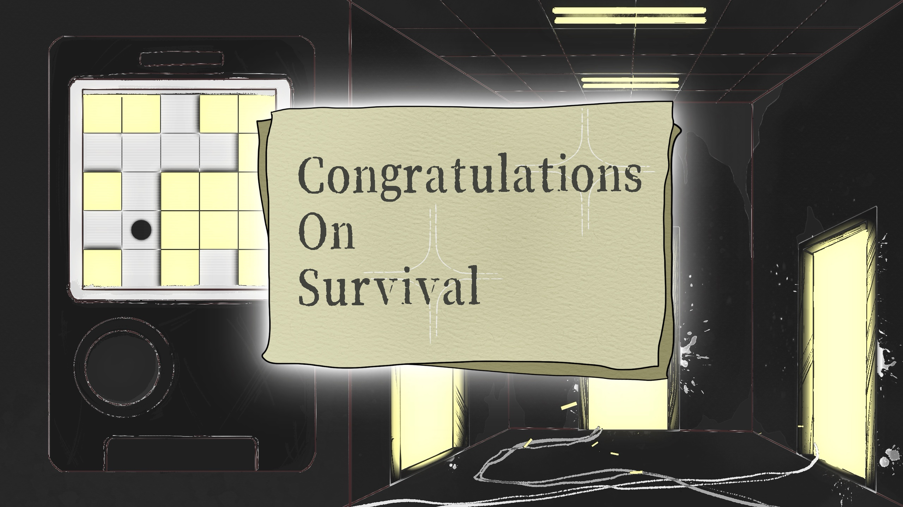

游戏指南
生存:
3秒一个回合，尽可能长时间存活，打破生存回合数纪录即为胜利。
移动:
W
A
S
D
移动，鼠标控制视角。
交互:
每回合1次鼠标左键开门，每次进入新房间，灯都会按照一定规律亮或者灭。
扫描:
按
F
扫描恶灵位置（次数有限）。
警告:
恶灵只会在黑暗房间中移动并追杀你，躲开她！
开始潜行 >
LIGHT TERMINAL
LUMENS: 0
AP: 1
SAFE
SCAN (3)
RESET
VISUAL FEED --- ONLINE
FPS: 60
ROOM: [INIT]
DOOR: READY

Restart
Back to Start